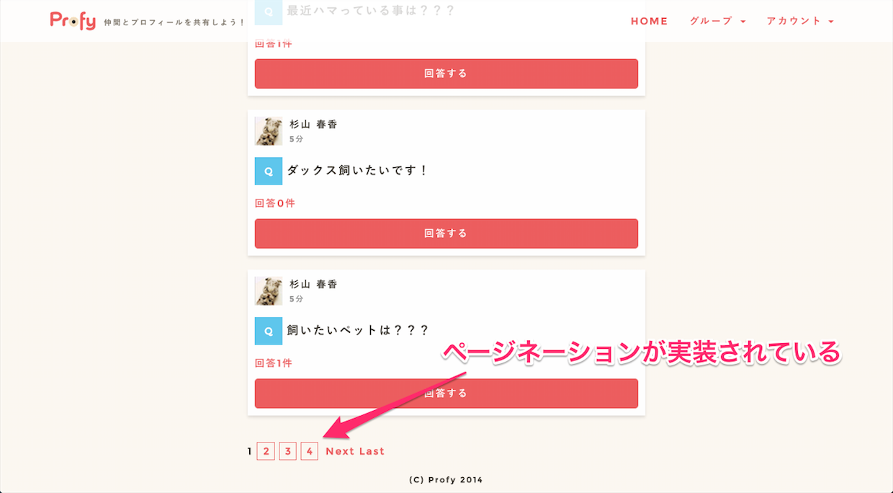
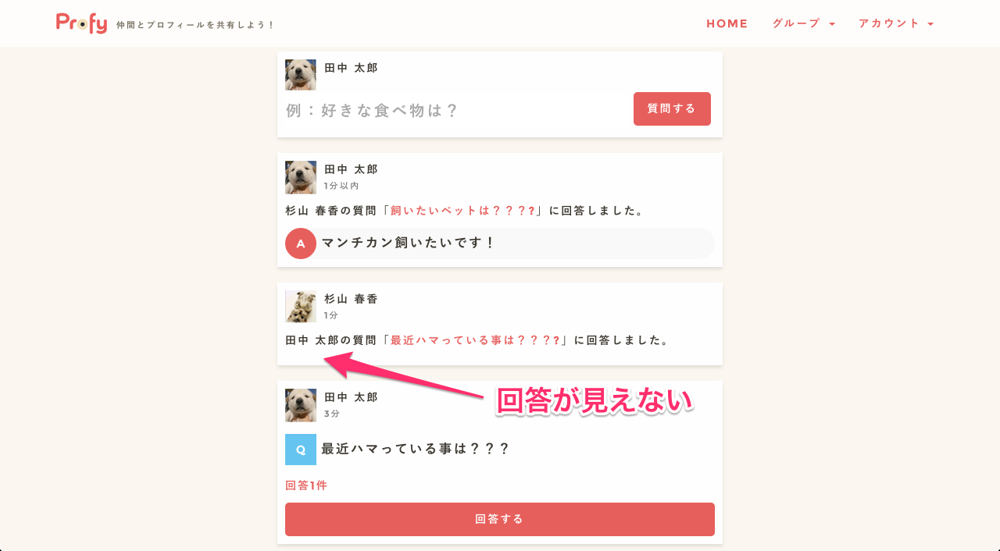
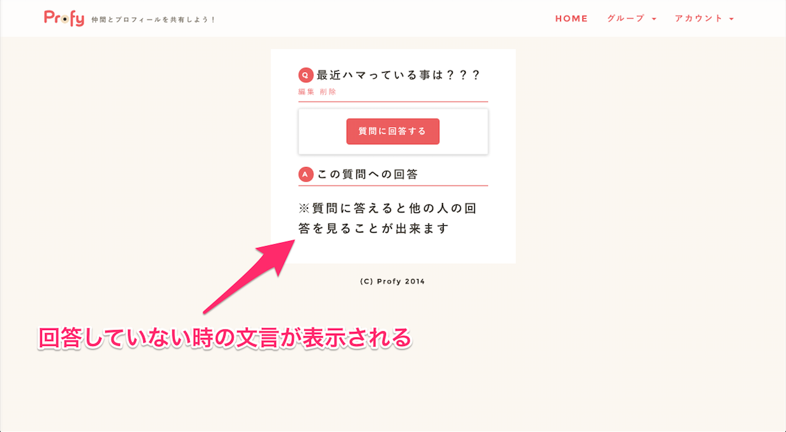
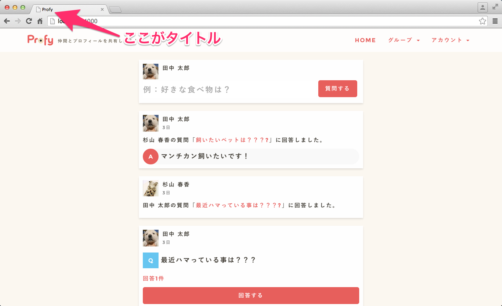
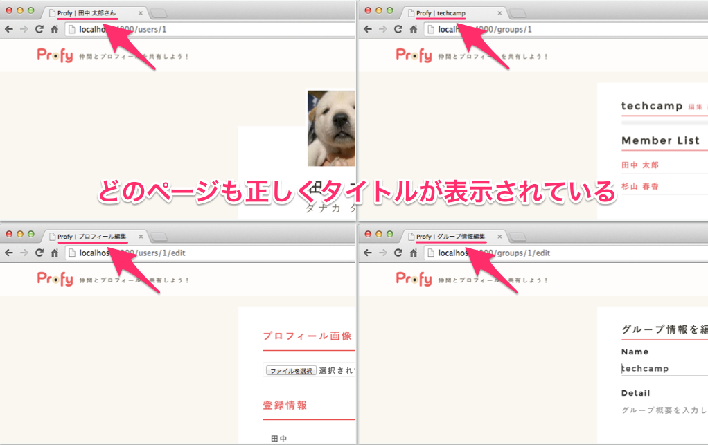

- 終了まであと10日
 大宅 誠人
大宅 誠人
大宅 誠人今の仕様だと質問と回答が増えるたびにページが伸びて、下までスクロールしないと前の質問と回答が見れないので、ユーザーにストレスを与えてしまいます。そこで複数のページに分割して各ページへのリンクを並べアクセスしやすくしたいと思います。
ページネーションを実装するには、PicTweetでも使ったgemのkaminariを利用します。
kaminariは第1章でGemfileに記述したので既にインストールが完了しています。
1ページに表示される質問と回答の情報を5件にします。コントローラーからビューに送る質問と回答の情報も5件のみになります。
/app/controller/top_controller.rbを以下のように編集してください。1 2 3 4 5 6 7 |
class TopController < ApplicationController
def index
@question = Question.new
@feed_contents = current_user.group.feed_contents.includes(:content).page(params[:page]).per(5)
@feed_contents_resource = @feed_contents.map(&:content)
end
end
|
ページネーションを実装する際にはコントローラーだけでなくビューにも編集を加える必要があります。
一度学習したpaginateメソッドの箇所も参考にしつつ進めていくと良いでしょう。
8 9 10 11 12 13 14 15 16 17 18 19 20 21 22 23 24 25 26 |
<div class="posting_form top_content">
<header class="posting_header">
<div class="posting_image icon_image" style="background-image: url(<%= current_user.avatar.url(:medium) %>);"></div>
<div class="posting_user_info user_info">
<%= current_user.name %>
</div>
</header>
<%= form_for(@question) do |f| %>
<%= f.text_field :text, placeholder: "例：好きな食べ物は？" %>
<%= f.submit "質問する" %>
<% end %>
</div>
<%= render # 質問と回答のレコードが入ったインスタンス変数を渡す %>
<%= # ページネーションのリンクを表示する %>
|
rails sでサーバーを起動してタイムラインにページネーションが実装できていることを確認してください。
以上でページネーションの実装は終了です。ページネーションはRails1-6で触ったことがあるので簡単だったかもしれません。
今の仕様だと質問に答えていなくても、その質問に対する他の人の回答を見ることができます。なので、その質問に答えた人だけが回答を見れるようにして、より投稿したくなるようにしましょう。
回答が見えるかどうかを変更したいので、編集するのはビューファイルです。
もし現在のユーザーがその質問に答えている場合は、その質問に対する回答を表示する。
現在のユーザがその質問に答えていない（それ以外）場合は、「※質問に答えると他の人の回答を見ることが出来ます」と表示させます。このような条件分岐にはif文をつかいますね。
/app/views/questions/show.html.erbを以下のように更新してください。1 2 3 4 5 6 7 8 9 10 11 12 13 14 15 16 17 18 19 20 21 22 23 |
<div class="row form">
<div class="col-lg-12">
<h3><span>Q</span><%= @question.text %>
</h3>
<div class="group_action panel panel-default">
<div class="panel-body">
<% if @question.answers.where(user_id: current_user.id).blank? %>
<%= link_to '質問に回答する', new_answer_path(question_id: @question.id) %>
<% else %>
<h4>※回答済み※</h4>
<% end %>
</div>
</div>
<% if @question.answers.present? %>
<h3><span>A</span>この質問への回答</h3>
<% if @question.answered?(current_user) %>
<%= render partial: "questions/answer", collection: @answers %>
<% else %>
<h1>※質問に答えると他の人の回答を見ることが出来ます</h1>
<% end %>
<% end %>
</div>
</div>
|
@question.answered?(current_user)はまだ定義していませんが、現在のユーザーがその質問に既に答えているかどうかを確認するインスタンスメソッドです。
@questionはQuestionモデルのインスタンスなので、Questionモデルに定義したインスタンスメソッドを呼び出すことができます。
タイムラインの回答も質問に答えた人だけが見えるようにします。
/app/views/answers/_answer.html.erbを以下のように更新してください。1 2 3 4 5 6 7 8 9 10 11 12 13 14 15 16 17 18 19 20 21 22 23 24 25 26 27 28 29 30 |
<div class="answer_content top_content">
<header class="answer_header">
<div class="answer_image icon_image" style="background-image: url(<%= answer.user.avatar.url(:medium) %>);"></div>
<div class="answer_user_info user_info">
<span><%= answer.user.name %></span>
<time><%= time_ago_in_words answer.created_at %></time>
</div>
</header>
<div class="answer_body">
<div class="answerd">
<%= answer.question.user.name %>の質問「<a href="#"><%= answer.question.text %>?</a>」に回答しました。
</div>
<% if answer.question.answered?(current_user) %>
<div class="answer_box">
<span class="a">A</span>
<span class="answer_text"><%= answer.text %></span>
<% if answer.user_id == current_user.id %>
<small class="edit">
<%= link_to '編集', edit_answer_path(answer) %>
</small>
<% end %>
</div>
<% end %>
<% if answer.question.answers.count > 1 %>
<div class="answer_other">
<%= link_to "他#{answer.question.answers.count - 1}件の回答を見る", question_path(answer.question) %>
</div>
<% end %>
</div>
</div>
|
11 12 13 14 15 16 17 18 19 20 21 22 23 24 25 |
# callback
after_create :create_feed_content
def user_answer(user_id)
Answer.find_by(user_id: user_id, question_id: id)
end
def answered?(user)
# レシーバである質問に、現在ログインしているユーザーが既に回答している場合はtrueを、回答していない場合はfalseを返す
end
private
def create_feed_content
self.feed_content = FeedContent.create(group_id: group_id, created_at: created_at)
end
|

質問の詳細ページの表示も確認してみましょう。

ここまででアプリはほぼ完成です。ですがどのページも「Profy」という同じタイトルになっているので、ページごとにタイトルを切り替えたいと思います。
タイトルはブラウザのツールバーに表示され、またお気に入り(ブックマーク)に登録された際や、検索エンジンの検索結果などにも表示されます。

ページごとにタイトルの値を変更するにはprovideメソッドを使用します。
provideメソッドはレイアウトファイルの内容をyieldで読み込みビューファイルによって上書きすることができます。例えば、ページ固有のタイトルなどを表示させたい時などに使用します。
個々のビューファイルでprovide :title, "個別タイトル"のように記述すればページ固有のタイトルを設定することができます。
1 |
<% provide :title, "マイページ" %> # provideメソッドを使って、`マイページ`という個別のタイトルを設定します
|
レイアウトファイルでは設定されたタイトルをyieldで表示します。
1 2 3 |
<head>
<title>Pictweet | <%= yield :title %></title> # レイアウトファイルでは設定された`マイページ`というタイトルをyieldで表示します
</head>
|
結果として以下のようなHTMLが生成されます。
1 2 3 |
<head>
<title>Pictweet | マイページ</title>
</head>
|
デフォルトでは、application.html.erbがレイアウトファイルとして使われていますね。今はページ固有のタイトルを表示させたいので/app/views/layouts/application.html.erbの<head>タグの内の<title>タグでyieldを使用します。
/app/views/layouts/application.html.erbを以下のように更新してください。1 2 3 4 5 6 7 8 9 10 11 12 13 14 15 16 17 18 19 20 21 22 23 24 25 26 |
<!DOCTYPE html>
<html lang="ja">
<head>
<meta charset="utf-8">
<meta http-equiv="X-UA-Compatible" content="IE=Edge,chrome=1">
<meta name="viewport" content="width=device-width, initial-scale=1.0">
<title>Profy<%= yield :title %></title>
<%= csrf_meta_tags %>
<%= stylesheet_link_tag 'application', media: 'all', 'data-turbolinks-track' => true %>
<%= javascript_include_tag 'application', 'data-turbolinks-track' => true %>
</head>
<body>
<%= render partial: 'common/header' %>
<div class="container">
<div class="row">
<div class="col-lg-12">
<%= bootstrap_flash %>
<%= yield %>
</div>
</div>
<footer class="row text-center">
<p>(C) Profy 2015</p>
</footer>
</div>
</body>
</html>
|
yield :titleの部分に、これから各ページで設定するprovide :title, "個別タイトル"が対応し、ページ個別のタイトルが挿入されます。
個々のビューファイルでprovideメソッドを使用して、タイトルの表示を設定します。Profyには複数のページが存在しますが、ここでは
マイページ、グループページ、プロフィール編集ページ、グループ情報編集ページの4つのページにそれぞれのタイトルを設定しましょう。
| ページ | タイトル |
|---|---|
| マイページ | Profy｜田中 太郎さん |
| グループページ | Profy｜techcamp |
| プロフィール編集ページ | Profy｜プロフィール編集 |
| グループ情報編集ページ | Profy｜グループ情報編集 |

お疲れ様でした。
以上でRails第3章のカリキュラムは終了です。
本章ではRailsアプリケーション構築の基本的な流れの復習に加え、新たな概念も多数登場しましたね。
その全てを現時点で100%理解している必要はありません。しかし必ず復習をする習慣をつけ、何度でも見直すようにしましょう。どれくらい復習に割いていくか、全体進捗の目安は Lesson1「事前準備をしよう」 にも記載されていますので、参考にしてみてください。
第3章の内容があいまいな方は、もう一度Profyを作ることが良い復習になります。Railsアプリケーション構築の流れがまだ整理できていないという方は、ためらわずRails第1章を復習しましょう。そもそもクラスやインスタンスといった概念から正確に理解できていないという方は、今のタイミングで再度、Rubyのカリキュラムを見直してみてください。新たな発見があるはずです。
そうして繰り返し知識を薄塗りしていくことで、最後にはきっと自分の力になります。
今後も引き続き、頑張っていきましょう！